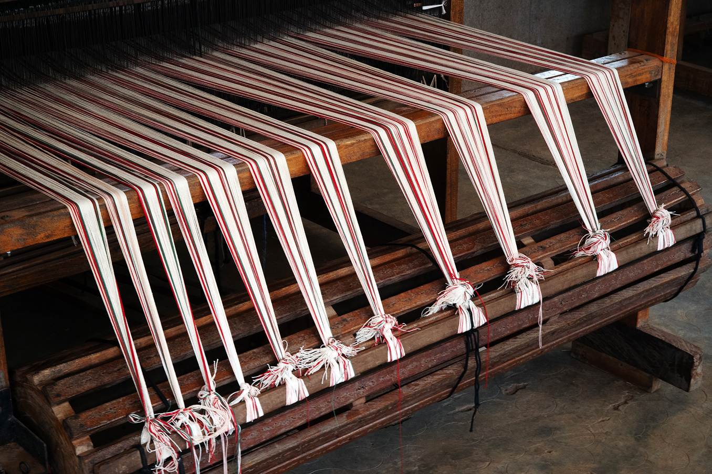
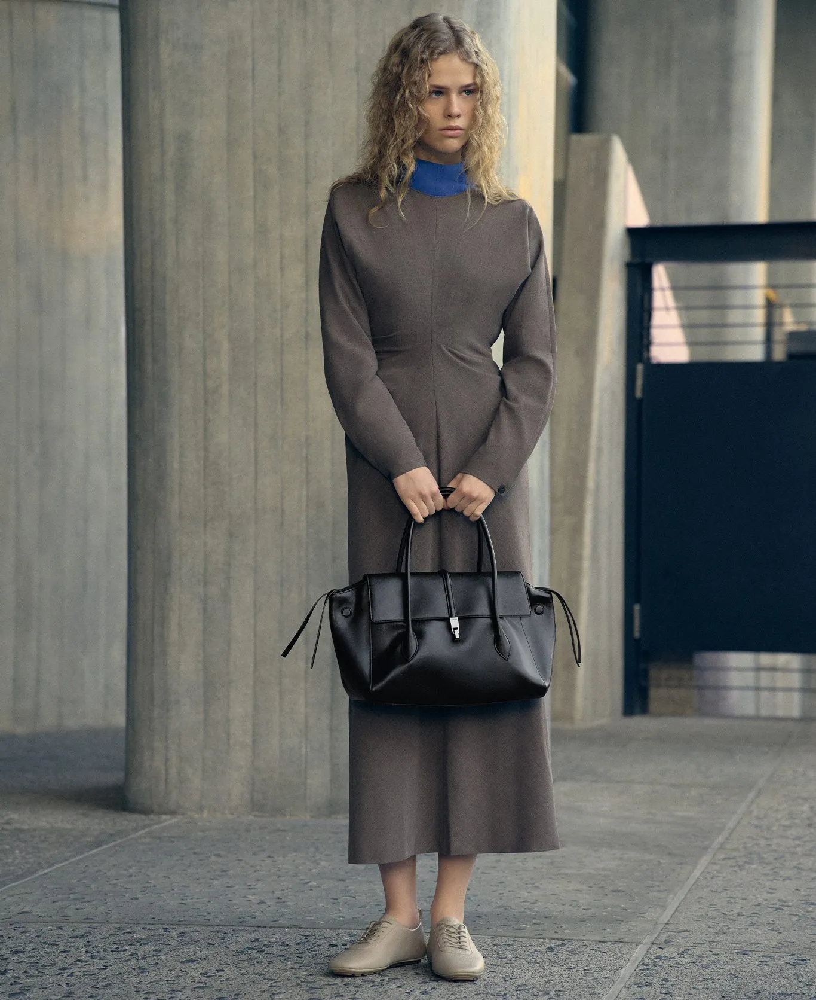
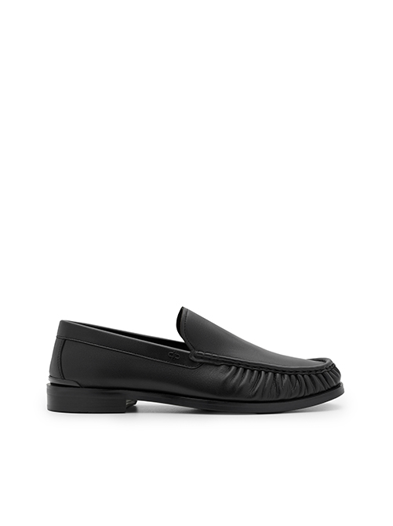
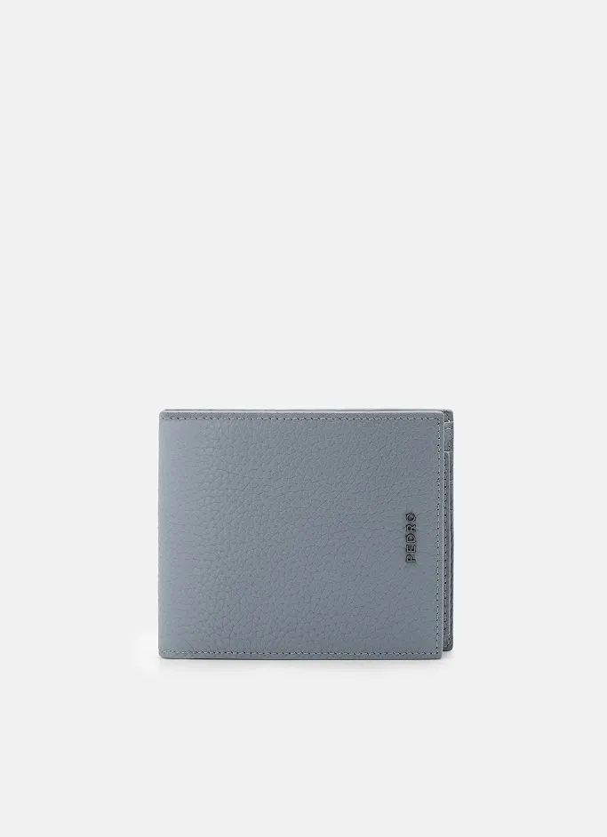

<style>
  /* ----------------------------------------------------
     SHARED BASE
     All variants below share this CSS-grid system: a left gutter / centred
     content column / right gutter, with named grid areas. The right gutter
     holds a secondary image that sticks in place while its own section
     scrolls, cropped at that section's edges by clip-path so it never
     bleeds into the next one. Run several sections back to back (as below)
     to see one sticky image hold, crop away, and the next pick up — that
     hand-off is the actual point of the effect, which is hard to notice
     from a single short section alone.
     ---------------------------------------------------- */
  .sticky-grid {
    --sg-text: #000;
    --sg-muted: #333;
    --sg-center: 460px;
    --sg-gap: 64px;
    --sg-sticky-top: 40px;
    padding: 40px 24px 0;
    color: var(--sg-text);
    background: #fff;
  }

  .sticky-grid__grid {
    display: grid;
    grid-template-columns: minmax(0, 1fr) minmax(0, var(--sg-center)) minmax(0, 1fr);
    grid-template-areas:
      ".     intro aside"
      "label body  aside"
      ".     media aside";
    column-gap: var(--sg-gap);
    max-width: 1440px;
    margin: 0 auto;
    clip-path: inset(0);
  }

  /* Intro (variant 1 only) */
  .sticky-grid__intro {
    grid-area: intro;
    margin-bottom: 110px;
  }

  .sticky-grid__logo {
    margin: 0 0 22px;
    font-family: proxima-nova, "Helvetica Neue", Arial, sans-serif;
    font-size: 22px;
    line-height: 1;
    letter-spacing: 0.12em;
    text-transform: uppercase;
  }

  .sticky-grid__logo-brand {
    font-weight: 700;
  }

  .sticky-grid__logo-name {
    font-weight: 300;
    margin-left: 0.35em;
  }

  .sticky-grid__tagline {
    margin: 0;
    font-family: baskerville, "Libre Baskerville", Georgia, serif;
    font-size: 15px;
    line-height: 1.45;
    max-width: 300px;
  }

  /* Label */
  .sticky-grid__label {
    grid-area: label;
    justify-self: center;
    margin: 0;
    font-family: baskerville, "Libre Baskerville", Georgia, serif;
    font-size: 12px;
    font-weight: 400;
    line-height: 1.35;
  }

  /* Heading (variant 3 only) */
  .sticky-grid__heading {
    grid-area: heading;
    margin: 0 0 18px;
    font-family: proxima-nova, "Helvetica Neue", Arial, sans-serif;
    font-size: 26px;
    font-weight: 400;
    line-height: 1.15;
  }

  /* Body */
  .sticky-grid__body {
    grid-area: body;
    max-width: 310px;
    margin-bottom: 70px;
    font-family: proxima-nova, "Helvetica Neue", Arial, sans-serif;
    font-size: 12px;
    line-height: 1.4;
    color: var(--sg-muted);
  }

  .sticky-grid__body p {
    margin: 0 0 14px;
  }

  .sticky-grid__body p:last-child {
    margin-bottom: 0;
  }

  .sticky-grid__body--more {
    grid-area: more;
    margin: 70px 0 0;
  }

  /* Centre image */
  .sticky-grid__media {
    grid-area: media;
    margin: 0;
  }

  .sticky-grid__media-img {
    display: block;
    width: 100%;
    height: auto;
  }

  /* Sticky aside
     Negative bottom margin stretches the aside past the grid, so the image
     keeps sticking while the section scrolls away and clip-path crops it
     from below. */
  .sticky-grid__aside {
    grid-area: aside;
    align-self: stretch;
    margin-bottom: -100vh;
  }

  .sticky-grid__sticky {
    position: sticky;
    top: var(--sg-sticky-top);
    width: 100%;
    max-width: 180px;
    margin: 0;
  }

  .sticky-grid__sticky-img {
    display: block;
    width: 100%;
    height: auto;
  }

  .sticky-grid__caption {
    margin: 8px 0 0;
    font-family: baskerville, "Libre Baskerville", Georgia, serif;
    font-size: 8px;
    line-height: 1.4;
    color: var(--sg-muted);
  }

  /* ----------------------------------------------------
     VARIANT 2 — Text only (no image or aside)
     ---------------------------------------------------- */
  .sticky-grid--text {
    padding-top: 120px;
    padding-bottom: 80px;
  }

  .sticky-grid--text .sticky-grid__grid {
    grid-template-areas: "label body .";
    clip-path: none;
  }

  .sticky-grid--text .sticky-grid__body {
    margin-bottom: 0;
  }

  /* ----------------------------------------------------
     VARIANT 3 — Heading + sticky aside via CSS subgrid
     Centred column, sticky aside running from the image down. Subgrid lets
     the sticky block sit bottom-aligned to the image, then stick as you
     scroll, without needing fixed row heights.
     ---------------------------------------------------- */
  .sticky-grid--heading {
    padding-top: 120px;
    padding-bottom: 80px;
  }

  .sticky-grid--heading .sticky-grid__grid {
    grid-template-areas:
      ".     heading ."
      ".     body    ."
      ".     media   aside"
      ".     more    aside";
  }

  .sticky-grid--heading .sticky-grid__aside {
    display: grid;
    grid-template-rows: subgrid;
  }

  .sticky-grid--heading .sticky-grid__sticky {
    grid-row: 1;
    align-self: end;
  }

  .sticky-grid--heading .sticky-grid__body {
    max-width: 300px;
  }

  /* ----------------------------------------------------
     VARIANT 4 — Two-tile gallery, centre column to the right edge
     ---------------------------------------------------- */
  .sticky-grid--gallery {
    padding-top: 40px;
    padding-bottom: 0;
  }

  .sticky-grid--gallery .sticky-grid__grid {
    grid-template-areas: ". gallery gallery";
    clip-path: none;
  }

  .sticky-grid__gallery {
    grid-area: gallery;
    display: grid;
    grid-template-columns: 1fr 1fr;
    grid-template-rows: minmax(0, 1fr);
    gap: 10px;
    aspect-ratio: 37 / 22;
  }

  /* Shared gallery/strip tile */
  .sticky-grid__tile {
    min-height: 0;
    margin: 0;
    overflow: hidden;
  }

  .sticky-grid__tile-img {
    display: block;
    width: 100%;
    height: 100%;
    object-fit: cover;
  }

  /* ----------------------------------------------------
     VARIANT 5 — Label + body, then a full-width image strip, then a
     closing paragraph
     ---------------------------------------------------- */
  .sticky-grid--strip {
    padding-top: 30px;
    padding-bottom: 80px;
  }

  .sticky-grid--strip .sticky-grid__grid {
    grid-template-areas:
      "label body  ."
      "strip strip strip"
      ".     more  .";
    clip-path: none;
  }

  .sticky-grid__strip {
    grid-area: strip;
    justify-self: center;
    width: min(100%, calc(var(--sg-center) + 180px));
    display: grid;
    grid-template-columns: repeat(4, minmax(0, 1fr));
    gap: 4px;
  }

  .sticky-grid__strip .sticky-grid__tile {
    aspect-ratio: 3 / 4;
  }

  /* Tablet */
  @media (max-width: 991.98px) {
    .sticky-grid {
      --sg-center: 420px;
      --sg-gap: 32px;
    }

    .sticky-grid__sticky {
      max-width: 160px;
    }
  }

  /* Mobile: stack, sticky and crop off */
  @media (max-width: 767.98px) {
    .sticky-grid__grid {
      grid-template-columns: minmax(0, 1fr);
      grid-template-areas:
        "intro"
        "label"
        "body"
        "aside"
        "media";
      clip-path: none;
    }

    .sticky-grid__intro {
      margin-bottom: 56px;
    }

    .sticky-grid__label {
      justify-self: start;
      margin-bottom: 12px;
    }

    .sticky-grid__body {
      max-width: none;
      margin-bottom: 40px;
      font-size: 14px;
    }

    .sticky-grid__body--more {
      margin: 40px 0 0;
    }

    .sticky-grid__aside {
      margin-bottom: 40px;
    }

    .sticky-grid__sticky {
      position: static;
      max-width: 60%;
      margin-left: auto;
    }

    .sticky-grid__caption {
      font-size: 10px;
    }

    .sticky-grid--text {
      padding-top: 56px;
      padding-bottom: 56px;
    }

    .sticky-grid--text .sticky-grid__grid {
      grid-template-areas:
        "label"
        "body";
    }

    .sticky-grid--heading {
      padding-top: 56px;
      padding-bottom: 56px;
    }

    .sticky-grid--heading .sticky-grid__grid {
      grid-template-areas:
        "heading"
        "body"
        "media"
        "aside"
        "more";
    }

    .sticky-grid--heading .sticky-grid__body {
      max-width: none;
    }

    .sticky-grid--heading .sticky-grid__aside {
      display: block;
      margin: 40px 0 0;
    }

    .sticky-grid--gallery .sticky-grid__grid {
      grid-template-areas: "gallery";
    }

    .sticky-grid__gallery {
      gap: 6px;
    }

    .sticky-grid--strip {
      padding-top: 40px;
      padding-bottom: 56px;
    }

    .sticky-grid--strip .sticky-grid__grid {
      grid-template-areas:
        "label"
        "body"
        "strip"
        "more";
    }

    .sticky-grid__strip {
      width: 100%;
      grid-template-columns: repeat(2, minmax(0, 1fr));
    }
  }
</style>

<!-- Variant 1: intro + label + body + image, sticky aside image -->
<section class="sticky-grid">
  <div class="sticky-grid__grid">

    <header class="sticky-grid__intro">
      <h1 class="sticky-grid__logo">
        <span class="sticky-grid__logo-brand">Brand</span><span class="sticky-grid__logo-name">Project</span>
      </h1>
      <p class="sticky-grid__tagline">A short tagline introducing the project or research platform shown below.</p>
    </header>

    <h2 class="sticky-grid__label">Why it Exists</h2>

    <div class="sticky-grid__body">
      <p>Opening paragraph setting up the idea — what problem or observation this section responds to.</p>
      <p>A second paragraph developing the thought further, building toward the image below.</p>
    </div>

    <div class="sticky-grid__media">
      
    </div>

    <aside class="sticky-grid__aside">
      <div class="sticky-grid__sticky">
        
        <p class="sticky-grid__caption">A short caption describing the sticky side image, which stays in view while this section scrolls.</p>
      </div>
    </aside>

  </div>
</section>

<!-- Variant 2: text only, no image or aside -->
<section class="sticky-grid sticky-grid--text">
  <div class="sticky-grid__grid">

    <h2 class="sticky-grid__label">Material<br>&amp; Mindset</h2>

    <div class="sticky-grid__body">
      <p>Rather than seeing material as something to shape around an idea, the project explores what happens when ideas begin with the material itself.</p>
      <p>Each piece carries its own dimensions and character. Instead of forcing consistency, these differences become part of the design process.</p>
      <p>The material begins the conversation and design responds.</p>
    </div>

  </div>
</section>

<!-- Variant 3: heading + body + image + closing paragraph, sticky aside via subgrid -->
<section class="sticky-grid sticky-grid--heading">
  <div class="sticky-grid__grid">

    <h2 class="sticky-grid__heading">Beyond the Surface</h2>

    <div class="sticky-grid__body">
      <p>Opening paragraph for this section — framing what's being explored before the image below.</p>
    </div>

    <div class="sticky-grid__media">
      
    </div>

    <div class="sticky-grid__body sticky-grid__body--more">
      <p>A follow-up paragraph continuing the thought after the image, developing it further.</p>
      <p>A closing paragraph that rounds out the section.</p>
    </div>

    <aside class="sticky-grid__aside">
      <div class="sticky-grid__sticky">
        
        <p class="sticky-grid__caption">Caption for the sticky side image.</p>
      </div>
    </aside>

  </div>
</section>

<!-- Variant 4: two-tile gallery -->
<section class="sticky-grid sticky-grid--gallery">
  <div class="sticky-grid__grid">

    <div class="sticky-grid__gallery">
      <div class="sticky-grid__tile">
        
      </div>
      <div class="sticky-grid__tile">
        
      </div>
    </div>

  </div>
</section>

<!-- Variant 5: label + body, 4-tile image strip, closing paragraph -->
<section class="sticky-grid sticky-grid--strip">
  <div class="sticky-grid__grid">

    <h2 class="sticky-grid__label">Research<br>Process</h2>

    <div class="sticky-grid__body">
      <p>A short paragraph introducing the process shown in the image strip below.</p>
    </div>

    <div class="sticky-grid__strip">
      <div class="sticky-grid__tile">
        
      </div>
      <div class="sticky-grid__tile">
        
      </div>
      <div class="sticky-grid__tile">
        
      </div>
      <div class="sticky-grid__tile">
        
      </div>
    </div>

    <div class="sticky-grid__body sticky-grid__body--more">
      <p>A closing paragraph reflecting on the process, rounding out the section.</p>
    </div>

  </div>
</section>
